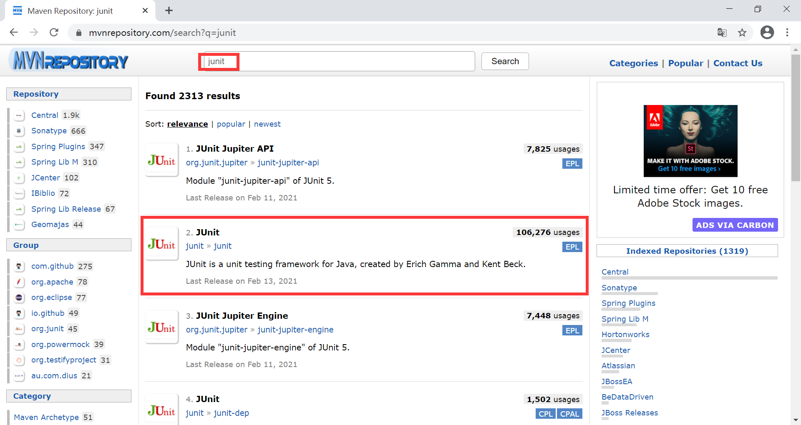
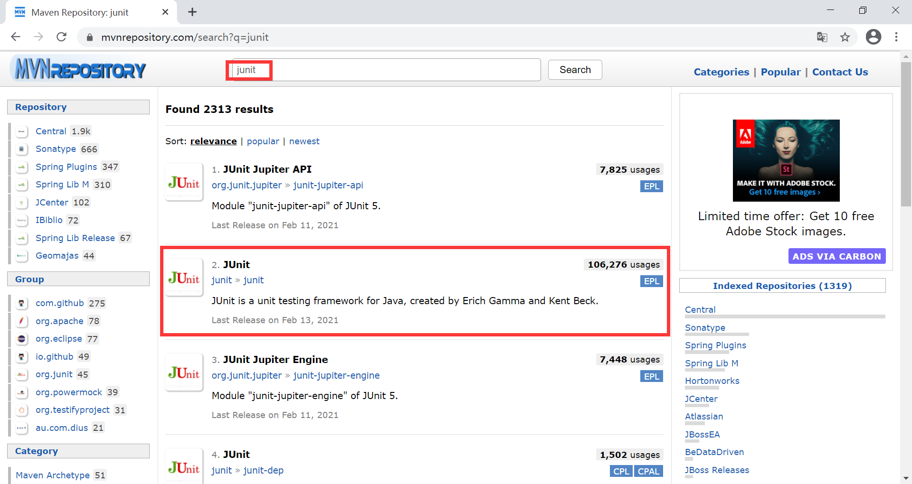
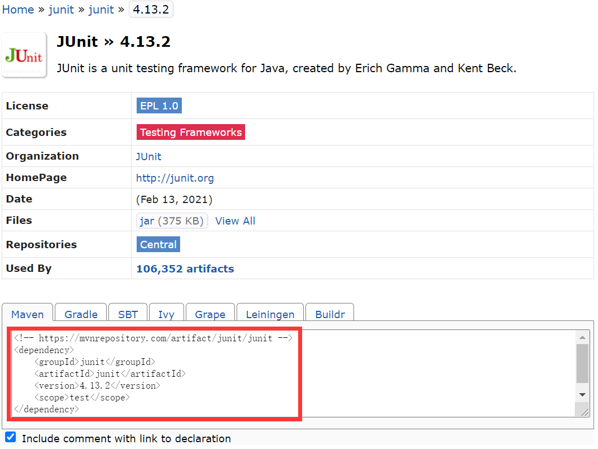

Maven依赖
Maven 是一款优秀的依赖管理工具，那么什么是依赖呢？
通俗的说，如果一个 Maven 构建所产生的构件（例如 Jar 文件）被其他项目引用，那么该构件就是其他项目的依赖。
当 Maven 项目需要声明某一个依赖时，通常只需要在其 POM 中配置该依赖的坐标信息，Maven 会根据坐标自动将依赖下载到项目中。
例如，某个项目中使用 servlet-api 作为其依赖，其配置如下。
dependencies 元素可以包含一个或者多个 dependency 子元素，用以声明一个或者多个项目依赖，每个依赖都可以包含以下元素：
例如，当项目中需要引入 junit 进行单元测试时， 我们只需要在首页搜索 junit 即可，如下图。

选择合适的版本，在依赖详情页的最下方就是该版本依赖的 Maven 坐标，我们可以直接将其复制到项目的 pom.xml 中使用。
通俗的说，如果一个 Maven 构建所产生的构件（例如 Jar 文件）被其他项目引用，那么该构件就是其他项目的依赖。
依赖声明
Maven 坐标是依赖的前提，所有 Maven 项目必须明确定义自己的坐标，只有这样，它们才可能成为其他项目的依赖。当一个项目的构件成为其他项目的依赖时，该项目的坐标才能体现出它的价值。当 Maven 项目需要声明某一个依赖时，通常只需要在其 POM 中配置该依赖的坐标信息，Maven 会根据坐标自动将依赖下载到项目中。
例如，某个项目中使用 servlet-api 作为其依赖，其配置如下。
<project xmlns="http://maven.apache.org/POM/4.0.0" xmlns:xsi="http://www.w3.org/2001/XMLSchema-instance"
xsi:schemaLocation="http://maven.apache.org/POM/4.0.0 http://maven.apache.org/maven-v4_0_0.xsd">
...
<dependencies>
<dependency>
<groupId>javax.servlet</groupId>
<artifactId>servlet-api</artifactId>
<version>2.5</version>
<scope>provided</scope>
</dependency>
</dependencies>
</project>
dependencies 元素可以包含一个或者多个 dependency 子元素，用以声明一个或者多个项目依赖，每个依赖都可以包含以下元素：
- groupId、artifactId 和 version：依赖的基本坐标，对于任何一个依赖来说，基本坐标是最重要的，Maven 根据坐标才能找到需要的依赖。
- type：依赖的类型，对应于项目坐标定义的 packaging。大部分情况下，该元素不必声明，其默认值是 jar。
- scope：依赖的范围。
- optional：标记依赖是否可选。
- exclusions：用来排除传递性依赖。
大部分依赖声明只包含 groupId、artifactId 和 version 三个元素，至于 scope、optional 以及 exclusions 等元素，了解即可，在后续的学习中我们会陆续进行讲解。
获取依赖坐标
通常情况下，绝大部分依赖的 Maven 坐标都能在 https://mvnrepository.com/ 中获取。例如，当项目中需要引入 junit 进行单元测试时， 我们只需要在首页搜索 junit 即可，如下图。

图1：获取坐标定位（猛击图片，查看原图）
选择合适的版本，在依赖详情页的最下方就是该版本依赖的 Maven 坐标，我们可以直接将其复制到项目的 pom.xml 中使用。

图2：Maven 依赖坐标
关注公众号「站长严长生」，在手机上阅读所有教程，随时随地都能学习。内含一款搜索神器，免费下载全网书籍和视频。

微信扫码关注公众号